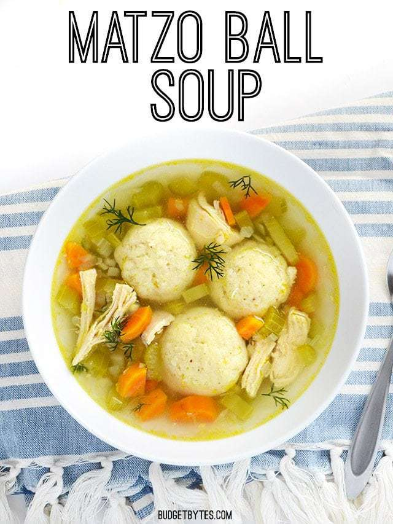

Back

Matzo or Matzah Ball Soup is a traditional Ashkenazi Jewish dish that is often served during Passover.
It’s a chicken soup filled with delicious dumplings made out of matzah meal (crushed unleavened bread), eggs, chicken fat (or another fat or oil), and broth.
The dumplings cook in the soup and soak up all the delicious flavor of the soup as they cook. This soup is absolutely delicious and soul-warming, and there’s just nothing in the world like it.
- 1 Tbsp vegetable or canola oil
- 2 cloves garlic
- 1 yellow onion
- 3 carrots
- 3 stalks celery
- 1 chicken breast
- 6 cups chicken broth
- 2 cups water
- Freshly cracked pepper
- Few sprigs fresh dill
MATZO BALLS
- 3 large eggs
- 3 Tbsp vegetable or canola oil
- 3/4 cup matzo meal
- 1 tsp salt
- 1/2 tsp baking powder
- Freshly cracked pepper
- 3 Tbsp water
- Mince the garlic and dice the onion, celery, and carrots. Sauté the garlic, onion, celery, and carrots with the vegetable oil in a large pot over medium heat until the onions are soft and transparent (about five minutes).
- Add the chicken breast, chicken broth, 2 cups water, some freshly cracked pepper, and one or two sprigs of dill to the pot. Place a lid on the pot and let it come up to a boil. Once it reaches a boil, turn the heat down to low and let it simmer for 30 minutes.
- While the soup is simmering, mix the matzo ball dough. In a medium bowl, whisk together the eggs and vegetable oil. Add the matzo meal, salt, baking powder, and a little freshly cracked pepper to the eggs and oil. Stir until well combined. Finally, add 3 Tbsp water and stir until smooth again. Refrigerate the mixture for 30 minutes to allow the matzo meal time to absorb the moisture.
- After the chicken soup has simmered, carefully remove the chicken breast and shred it with a fork. Return the shredded chicken to the soup. Taste the broth and adjust the salt if needed.
- Once the matzo ball mix has refrigerated and stiffened up, begin to form it into ping pong sized balls. Drop the balls into the simmering soup as they are formed, returning the lid to the pot after each one. Once all the matzo balls are in the soup, let them simmer for 20 minutes without removing the lid. Make sure the soup is gently simmering the entire time.
- Add a couple sprigs of fresh dill just before serving.